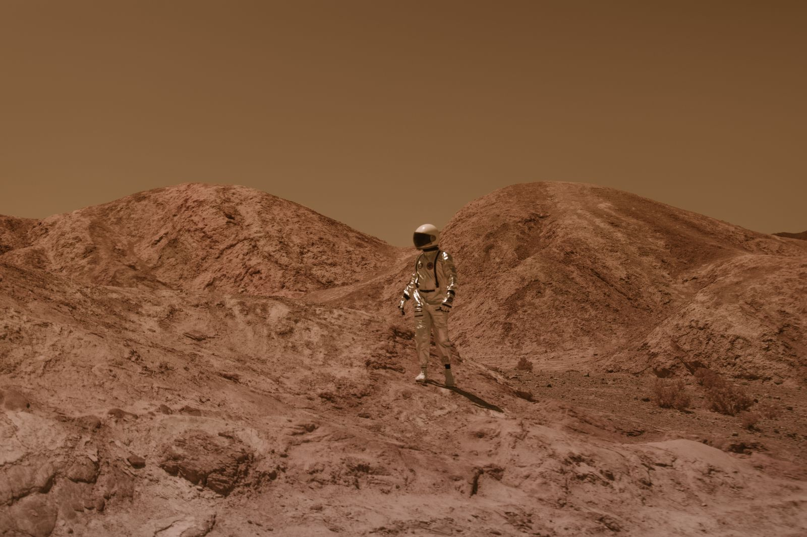
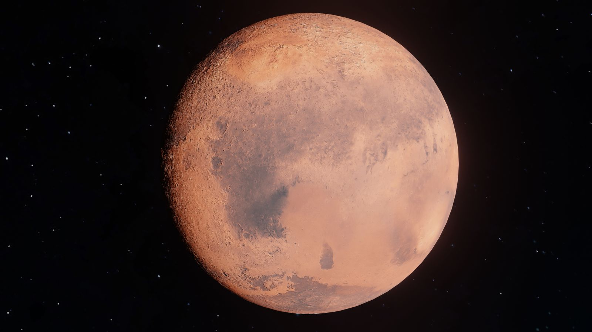

Ares YardSurface habitat study · Mars
CLIENT Agency concept programme · CREW 6 · DURATION 500 sols
DRIVING CONSTRAINT Radiation — 2.5 m regolith berm · OUTPUT Rev C study, 214 pp
§0 — Proposition · Habitat concept design
I design Mars surface habitats and the Earth analogue stations that test them — layout, shielding, life support and dust control, closed on paper before anyone cuts metal. The output is a Rev-controlled study your engineers can argue with, not a render you can only admire.
Everything here is concept work, labelled as such. Where a study has been built and slept in, that is an Earth analogue station — and the site says exactly that, every time.

Every commission on the books, including the one I turned down. Crew, duration and the constraint that actually drove the design — not the one in the press release.
CLIENT Agency concept programme · CREW 6 · DURATION 500 sols
DRIVING CONSTRAINT Radiation — 2.5 m regolith berm · OUTPUT Rev C study, 214 pp
CLIENT Analogue station operator · CREW 5 · DURATION 30-day isolation
DRIVING CONSTRAINT Noise & privacy in 68 m² · OUTPUT Built refit + crew debrief
CLIENT Commercial lander programme · CREW 0 · DURATION 26 months unattended
DRIVING CONSTRAINT Dust & thermal cycling · OUTPUT PDR document pack
CLIENT University consortium · CREW 8 · DURATION 180 sols
DRIVING CONSTRAINT Unknown geometry; comms via relay only · OUTPUT Feasibility study
CLIENT Film production · CREW ON SCREEN 7 · SHOOT 41 days
DRIVING CONSTRAINT A panoramic window the physics won't allow · OUTPUT Design + engineering notes, adopted
BRIEF Unshielded structural glazing as the primary hull
REASON ON RECORD Surface dose at berth would exceed career limits in one stay

The spine of every study is a section drawing. Select a system to read its specification, its numbers and the basis they stand on.
Fig. 2 — Diagram, not to scale. Section through Ares Yard (SH-01), Rev C. Dashed line: storm shelter core.
The same sequence for an agency study and a film set — only the consequences differ.
01
Every number the planet imposes — dose, pressure, dust, delay — written down and sourced before a single line is drawn.
02
Who sleeps where, relative to noise, radiation and the airlock. Privacy is treated as a life-support system, because crews report it as one.
03
ECLSS, power and thermal budgets closed on paper. The mass budget is kept honest — if it doesn't close, the study says so at PDR, not after.
04
The layout is walked, mocked up and argued with by people who have actually done isolation time. Their objections are logged, not smoothed over.
05
Rev-controlled documents. Every change carries its reason, so a client inheriting the study in five years can see why the wall is where it is.
Concept design is bought by the study, not by the render. Prices are starting points; the column on the right is what moves them.
| Service | From |
|---|---|
| Feasibility noteBrief review, constraints register, go / no-go with reasons | £6,500 |
| Concept studyLayout, systems budgets, plan & section set, Rev-controlled report | £28,000 |
| Analogue reviewWalk-through and crew-experience audit of an existing station or mock-up | £4,200 |
| Film & media engineering reviewProduction design checked against the physics, per day on set or in prep | £950 / day |
| Advisory day rateConsortium bids, design reviews, habitability assessment | £950 / day |
“Maren's refit was the first analogue interior I have worked in that treated sleep and privacy as life-support systems. We finished thirty days measurably less frayed than the previous campaign in the same building — and the only variable that changed was her layout.”
RESPONSE WITHIN 3 WORKING DAYS · NDA ON REQUEST · STUDIES IN ENGLISH OR NORWEGIAN